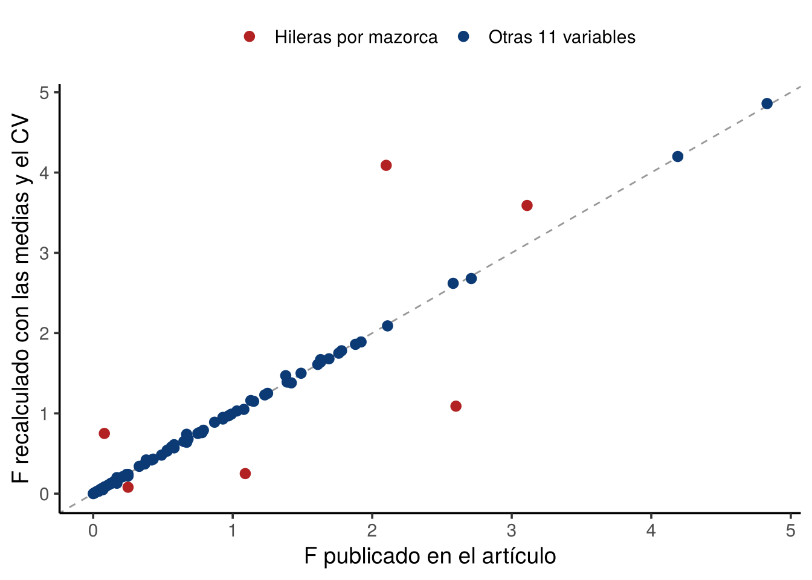
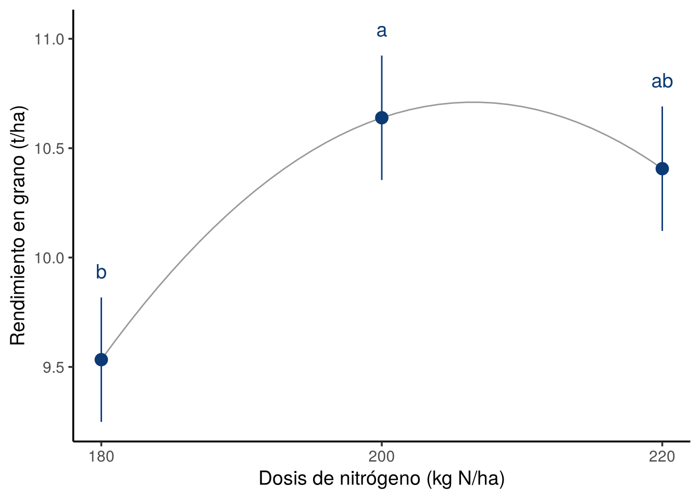

library(ggplot2)library(knitr)medias <-read.csv("data/maiz_medias.csv")tabla1 <-read.csv("data/tabla1_articulo.csv")medias$D <-factor(medias$densidad_pl_ha)medias$N <-factor(medias$nitrogeno_kg_ha)medias$F <-factor(medias$fraccionamiento)variables <-names(medias)[5:16]r <-4# bloquesgle <-33# grados de libertad del error: (12 - 1) x (4 - 1)azul <-"#0B3A75"
1. Qué se puede re-analizar sin los datos por parcela
Sin datos por parcela no se pueden revisar los residuos ni la normalidad. Pero en un DBCA balanceado, las medias de los 12 tratamientos y el coeficiente de variación (CV) bastan para reconstruir toda la parte del ANOVA que corresponde a los tratamientos:
Las sumas de cuadrados de D, N, F y sus interacciones salen de las medias, multiplicadas por los 4 bloques.
El cuadrado medio del error se recupera del CV: \(CME = (CV \times \bar{y} / 100)^2\).
Con eso se recalcula cada valor F y se compara con el que publica el artículo.
Ver código R
reconstruir <-function(y) { m <-lm(medias[[y]] ~ D * N * F, data = medias, weights =rep(r, 12),contrasts =list(D = contr.sum, N = contr.sum, F = contr.sum)) a <-anova(m)[1:7, ] cv <- tabla1[tabla1$fuente =="CV_pct", y] cme <- (cv /100*mean(medias[[y]]))^2 Fr <- a$"Mean Sq"/ cmedata.frame(variable = y,fuente = tabla1$fuente[1:7],gl = a$Df,F_articulo = tabla1[1:7, y],F_recalculado =round(Fr, 2),p_recalculado =round(pf(Fr, a$Df, gle, lower.tail =FALSE), 4))}rec <-do.call(rbind, lapply(variables, reconstruir))
2. ¿Coinciden los valores F?
Ver código R
rec$hileras <-ifelse(rec$variable =="hileras_mazorca", "Hileras por mazorca", "Otras 11 variables")ggplot(rec, aes(F_articulo, F_recalculado, colour = hileras)) +geom_abline(linetype =2, colour ="grey60") +geom_point(size =2.6) +scale_colour_manual(values =c("Hileras por mazorca"="#B22222", "Otras 11 variables"= azul)) +labs(x ="F publicado en el artículo", y ="F recalculado con las medias y el CV", colour =NULL) +theme_classic(base_size =14) +theme(legend.position ="top")

Cada punto es un valor F (12 variables × 7 fuentes = 84). Sobre la diagonal, el F recalculado es igual al publicado.
En 11 de las 12 variables el F recalculado coincide con el publicado (las diferencias son de redondeo). Esto confirma que el diseño era balanceado y que las medias de la Tabla 2 son correctas.
La excepción es número de hileras por mazorca: ningún valor F publicado corresponde a las medias publicadas.
Ver código R
kable(rec[rec$variable =="hileras_mazorca", 2:6],caption ="Hileras por mazorca: F publicado frente a F recalculado.", row.names =FALSE)
Hileras por mazorca: F publicado frente a F recalculado.
fuente
gl
F_articulo
F_recalculado
p_recalculado
D
1
0.08
0.75
0.3921
N
2
0.25
0.08
0.9200
F
1
2.10
4.09
0.0512
DxN
2
1.09
0.25
0.7797
DxF
1
0.08
0.08
0.7743
NxF
2
3.11
3.59
0.0387
DxNxF
2
2.60
1.09
0.3492
Con las medias del propio artículo, la interacción N × F sería significativa (p = 0,039), y el artículo la reporta como no significativa. No se puede saber cuál de las dos tablas está mal sin los datos por parcela, pero las dos no pueden ser correctas a la vez.
El artículo asigna la letra A a 200 y a 220 kg N/ha y la letra B a 180 kg N/ha. Con su propio CME, la diferencia entre 220 y 180 kg N/ha (0,87 t/ha) no supera la DMS de Tukey (0,99 t/ha). Las letras correctas son:
Dosis (kg N/ha)
Rendimiento (t/ha)
Artículo
Re-análisis
200
10,64
A
a
220
10,41
A
ab
180
9,53
B
b
4. El nitrógeno es cuantitativo: contrastes polinomiales
Tukey trata las dosis como categorías sin orden. Como son cantidades (180, 200 y 220 kg N/ha), lo adecuado es preguntar si el rendimiento sube con la dosis (tendencia lineal) o se estabiliza (tendencia cuadrática).
Ver código R
contrastes <-list(lineal =c(-1, 0, 1), cuadratico =c(1, -2, 1))poli <-do.call(rbind, lapply(names(contrastes), function(k) { cc <- contrastes[[k]] sc <- n_nivel *sum(cc * mN)^2/sum(cc^2) Fv <- sc / cme_rgdata.frame(contraste = k, F =round(Fv, 2), p =round(pf(Fv, 1, gle, lower.tail =FALSE), 3))}))kable(poli, row.names =FALSE, caption ="Contrastes ortogonales para la dosis de nitrógeno (rendimiento).")
Contrastes ortogonales para la dosis de nitrógeno (rendimiento).
contraste
F
p
lineal
4.71
0.037
cuadratico
3.69
0.063
Ver código R
x <-c(180, 200, 220)ajuste <-lm(mN ~ x +I(x^2))curva <-data.frame(x =seq(180, 220, 1))curva$y <-predict(ajuste, curva)ee <-sqrt(cme_rg / n_nivel)ggplot() +geom_line(data = curva, aes(x, y), colour ="grey60") +geom_pointrange(aes(x = x, y = mN, ymin = mN - ee, ymax = mN + ee), colour = azul, size =0.8) +geom_text(aes(x = x, y = mN + ee +0.12, label =c("b", "a", "ab")), colour = azul, size =5) +scale_x_continuous(breaks = x) +labs(x ="Dosis de nitrógeno (kg N/ha)", y ="Rendimiento en grano (t/ha)") +theme_classic(base_size =14)

Rendimiento medio por dosis de N (± error estándar) y curva cuadrática que pasa por las tres medias.
Solo la tendencia lineal es significativa (p = 0,037). La cuadrática (p = 0,063) no llega al 5 %, así que los datos no permiten afirmar que 200 kg N/ha sea la dosis óptima. Con solo tres dosis separadas por 20 kg, el rango es demasiado estrecho para ubicar un óptimo.
5. La “mejor combinación” no tiene respaldo
El artículo destaca 69 444 plantas/ha + 200 kg N/ha en dos aplicaciones (10,94 t/ha) como la mejor combinación. Para comparar los 12 tratamientos entre sí, Tukey exige una diferencia mucho mayor:
Ni siquiera el mejor y el peor tratamiento difieren estadísticamente. Además, ninguna interacción fue significativa, así que no se debe interpretar una combinación concreta.
6. Muchas pruebas, pocos resultados
El artículo hace 84 pruebas F (12 variables × 7 fuentes). Si ningún factor tuviera efecto, se esperarían unas 4 pruebas significativas solo por azar (84 × 0,05). Encontraron dos.
Al corregir por comparaciones múltiples (Benjamini-Hochberg), ningún efecto sigue siendo significativo. Los dos resultados del artículo son compatibles con el azar.
7. ¿Qué diferencia podía detectar el experimento?
Ver código R
dmd <-do.call(rbind, lapply(variables, function(y) { cv <- tabla1[tabla1$fuente =="CV_pct", y]data.frame(variable = y, CV = cv,diferencia_minima_pct =round((qt(0.975, gle) +qt(0.80, gle)) *sqrt(2/24) * cv, 1))}))kable(dmd, row.names =FALSE,caption ="Diferencia mínima entre las dos densidades que el ensayo detecta con 80 % de potencia.")
Diferencia mínima entre las dos densidades que el ensayo detecta con 80 % de potencia.
variable
CV
diferencia_minima_pct
rendimiento_t_ha
11.16
9.3
altura_planta_m
3.58
3.0
altura_mazorca_m
6.23
5.2
diametro_tallo_cm
4.59
3.8
dias_floracion
0.99
0.8
peso_grano_mazorca_g
9.05
7.5
peso_tusa_g
9.94
8.3
longitud_mazorca_cm
3.88
3.2
diametro_mazorca_cm
2.40
2.0
hileras_mazorca
3.54
3.0
granos_hilera
3.67
3.1
peso_100_granos_g
5.59
4.7
Para el rendimiento, el ensayo solo podía detectar con seguridad diferencias de 9 % o más entre densidades. Decir que la densidad “no afecta” el rendimiento es más fuerte de lo que los datos permiten: diferencias menores pasarían desapercibidas.